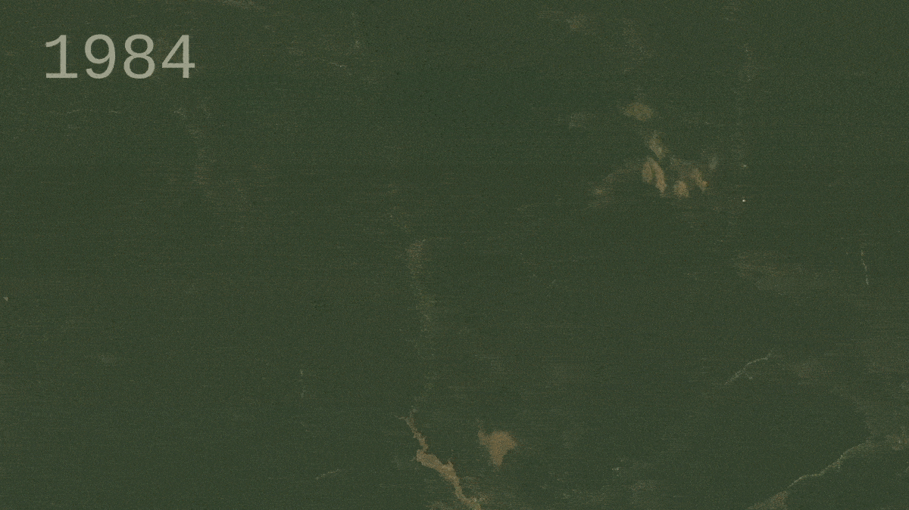
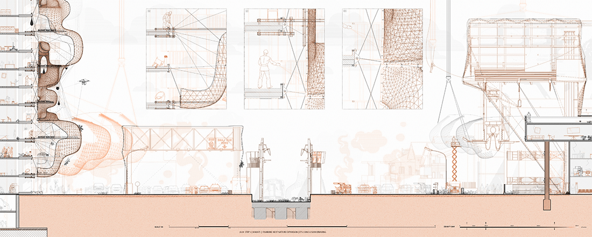
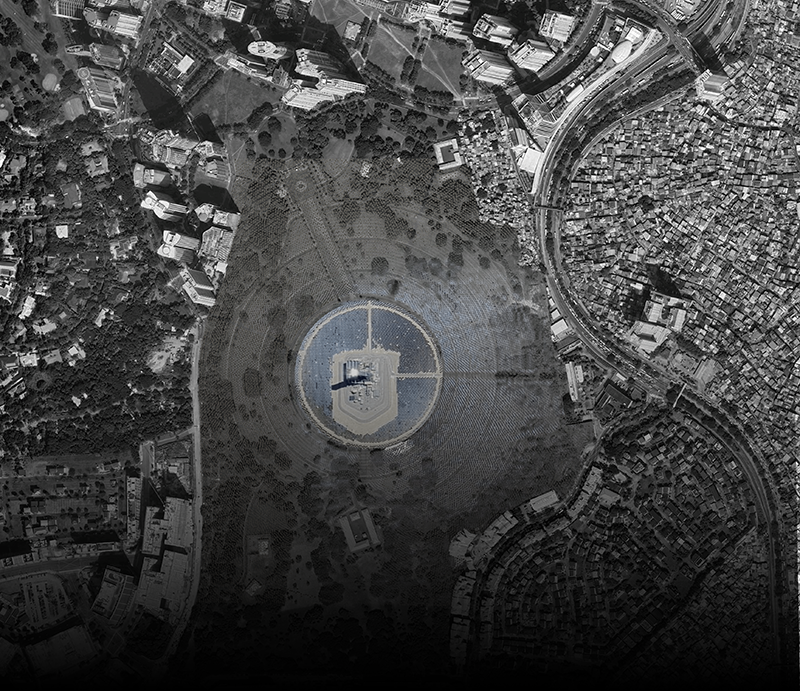

An Expansive City-Green Corridor stretching across 30 kilometers, from the La Mesa Dam Reservoir across inspirational Makati City to the beautiful Pugad Baboy Mangrove Forest. A Lightweight architectural masterpiece suspended 10 meters above ground, built on land reusing 160% more space. E-COIN redefines the concept of urban development and what cities of the future will look like.
30km Long Green Spine Corridor | 10m Ground Offset | 21308 New Species
WHAT IS FISH-BONE & ANTI FISH-BONE ?
Deforestation pattern where roads and clearings branch off from main roads, resembling a fishbone structure, leading to extensive forest fragmentation.

The initial phase will commence in 2026
Three Sites as the Center Point of Expansion*
A TOP-DOWN STRATEG
The urban innovation involves the development of a novel lightweight structure and construction methods, prioritizing a top-down assembly approach.
15.57 million m² Secured Next Nature Land |
40928490 Harvested Veg from Hydroponic Jeepney Farms

A CITY FULLY POWERED BY 100% RENEWABLE ENERGY
Leveraging the cemetery's layout, establish an innovative solar farm that harmoniously coexists with both old and new elements.

15.57 million m² Secured Next Nature Land |
40928490 Harvested Veg from Hydroponic Jeepney Farms